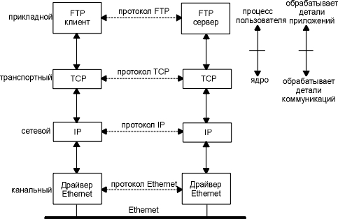
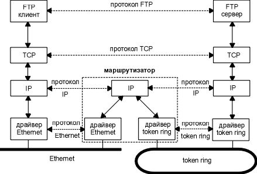
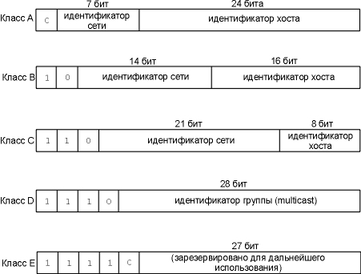
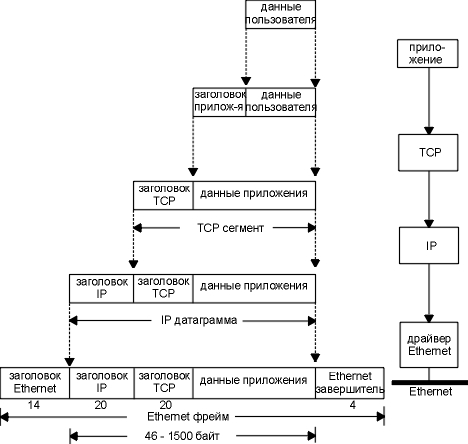
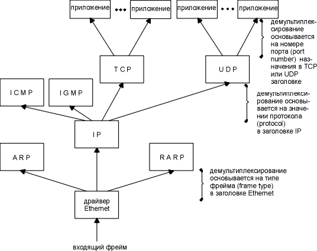
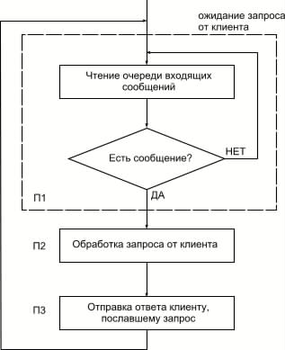
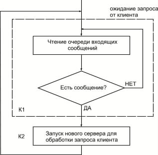
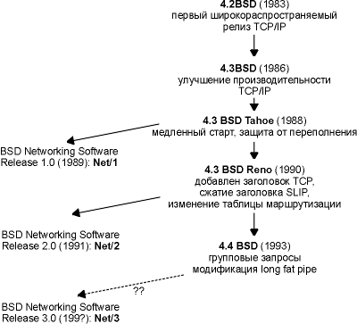

Семейство протоколов TCP/IP работает на любых моделях компьютеров, произведенных различными производителями компьютерной техники и работающих под управлением различных операционных систем. С помощью протоколов TCP/IP можно объединить практически любые компьютеры. И что самое удивительное, сегодняшние реализации протокола TCP/IP очень далеки от того, как он задумывался исходно. В конце 60-х годов начался исследовательский проект, финансируемый правительством США, по разработке сети пакетной коммутации, а в 90-х годах результаты этих исследований превратились в наиболее широко используемую форму сетевого взаимодействия между компьютерами. В настоящее время это действительно открытая система, а именно, семейство протоколов и большое количество бесплатных реализаций (либо достаточно дешевых). Они составляют основу того, что в настоящее время называется словом Internet.
В этой главе мы познакомимся с семейством протоколов TCP/IP, для того чтобы подойти к чтению следующих глав более или менее подготовленными. Чтобы познакомиться с ранней историей разработки TCP/IP, можно обратиться к [Lynch 1993].
Сетевые протоколы обычно разрабатываются
по уровням, причем каждый уровень отвечает за собственную фазу коммуникаций. Семейства
протоколов, такие как TCP/IP, это комбинации различных протоколов на различных
уровнях. TCP/IP состоит из четырех уровней,
как показано на рисунке 1.1.
| Прикладной | Telnet, FTP, e-mail и т.д. |
| Транспортный | TCP,UDP |
| Сетевой | IP, ICMP, IGMP |
| Канальный | драйвер устройства и интерфейсная плата |
Рисунок 1.1 Четыре уровня протоколов
TCP/IP.
Каждый уровень несет собственную функциональную нагрузку.

Рисунок 1.2 Два хоста в локальной сети с работающим FTP.
Мы пометили один квадратик на прикладном уровне как FTP клиент, а другой как FTP сервер. Большинство сетевых приложений работают именно таким образом, то есть, на одном конце клиент, а на другом сервер. Сервер предоставляет некоторые типы сервиса клиентам. В данном случае это доступ к файлам на сервере. Telnet предоставляет сервис, позволяющий клиенту зайти на сервер удаленным терминалом.
Каждый уровень имеет один или несколько протоколов, который позволяет общаться с удаленным узлом на том же уровне. Один протокол, например, позволяет общаться двум TCP уровням, а другой протокол обеспечивает коммуникации между двумя IP уровнями.
С правой стороны на рисунке 1.2 мы видим, что прикладной уровень обеспечивается пользовательским процессом, тогда как три нижних уровня обычно встроены в ядро операционной системы. Несмотря на то, что возможны и другие способы реализации, во всех UNIX системах все построено именно по такому принципу.
Существует еще одно отличие между верхним уровнем и тремя нижними уровнями, приведенными на рисунке 1.2. Прикладной уровень обычно является приложением и взаимодействует с пользователем, а не занимается передачей данных по сети. Три нижних уровня ничего не знают о работающих над ними приложениях, однако отвечают за все детали коммуникаций.
На рисунке 1.2 мы показали четыре протокола, каждый на своем уровне. FTP это протокол прикладного уровня, TCP - протокол транспортного уровня, IP - протокол сетевого уровня, а протоколы Ethernet обеспечивают канальный уровень. Семейство протоколов TCP/IP объединяет в себе множество протоколов, однако наиболее часто используемые названия для данного семейства это TCP/IP, TCP и IP (иногда семейство называют Семейство Протоколов Internet).
Цели, решаемые сетевым и прикладным уровнями, различны - первый обеспечивает взаимодействие с различными средами передачи (Ethernet, Token ring, и т.д.), второй работает с конкретными пользовательскими приложениями (FTP, Telnet, и т.д.). На первый взгляд, разница между сетевым и транспортным уровнями достаточно туманна. На основании чего между ними проводится разграничение? Чтобы понять это, мы рассмотрим не одну отдельно взятую сеть, а несколько сетей.
Одной из причин феноменального роста сетевых технологий в течение 80-х годов явилось понимание того, что отдельно стоящий компьютер практически бесполезен. Несколько отдельных систем были объединены вместе в сеть. Однако, как выяснилось позже, а именно в 90-х годах, отдельно стоящая сеть также практически бесполезна. Поэтому люди начали объединять сети вместе. Именно результат такого объединения получил название internet (межсетевое взаимодействие). internet это несколько объединенных сетей, которые используют одно и то же семейство протоколов.
Наиболее простой путь осуществить межсетевое взаимодействие - это объединить две или более сетей с помощью маршрутизатора. Как правило, маршрутизатор представляет из себя аппаратное устройство. Огромное достоинство маршрутизаторов заключается в том, что они могут объединить сети, построенные на различных физических принципах: Ethernet, Token ring, point-to-point, FDDI (Fiber Distributed Data Interface), и так далее.
Эти устройства также иногда называются IP маршрутизаторами (IP router), однако мы будем использовать термин маршрутизатор (router).
Исторически эти устройства назывались шлюзами (gateway), и этот термин до сих пор широко используется в литературе о TCP/IP. Сегодня чаще всего термин шлюз используется для обозначения шлюза между приложениями: процесс, который объединяет два различных семейства протоколов (скажем, TCP/IP и IBM SNA) в одном конкретном приложении (чаще всего это электронная почта или передача файлов).
На рисунке 1.3 показано объединение двух сетей: Ethernet и Token ring с помощью маршрутизатора. Несмотря на то что мы показали связь только между двумя компьютерами, подсоединенными к маршрутизатору из разных сетей, любой компьютер в Ethernet может общаться с любым компьютером в Token ring.
На рисунке 1.3 мы также можем проследить
разницу между конечной системой (end system),
в данном случае это два компьютера на каждой стороне, и промежуточной
системой (intermediate system), в данном случае это маршрутизатор в середине.
Прикладной и транспортный уровни используют протоколы, ориентированные
на соединение (end-to-end). На рисунке эти два уровня используются только
конечными системами. Сетевой уровень, однако, использует протокол, не требующий
соединения (пересылка-за-пересылкой - hop-by-hop),
он используется в данном случае двумя конечными системами и каждой промежуточной
системой.

Рисунок 1.3 Две сети, соединенные через маршрутизатор.
В семействе протоколов TCP/IP сетевой уровень - IP. Он предоставляет ненадежный сервис. Это означает, что в процессе своей работы протокол передает пакет от источника к пункту назначения, однако не предоставляет никаких гарантий того, что пакет дойдет по назначению. TCP, с другой стороны, предоставляет надежный транспортный уровень, который пользуется ненадежным сервисом IP. Чтобы обеспечить подобный сервис, TCP выставляет тайм-ауты и осуществляет повторные передачи, отсылает и принимает подтверждения и так далее. Транспортный уровень и сетевой уровень несут различную ответственность за передачу данных.
Маршрутизатор, по определению, имеет два или несколько интерфейсов сетевого уровня (если он объединяет две или более сетей). Любая система с несколькими интерфейсами называется многоинтерфейсной (multihomed). Компьютер, имеющий несколько интерфейсов, но не перенаправляющий пакеты с одного интерфейса на другой, не может называться маршрутизатором. Большинство реализаций TCP/IP позволяют компьютерам с несколькими интерфейсами функционировать в качестве маршрутизаторов. Однако компьютеры должны быть специально сконфигурированы, чтобы решать задачи маршрутизации. Таким образом, мы можем называть систему хостом, когда на нем работают такие приложения как FTP или Telnet, или маршрутизатором, когда он осуществляет передачу пакетов из одной сети в другую. В зависимости от того какие функции выполняются компьютером, мы будем использовать тот или иной термин.
Одна из основных задач объединения сетей заключается в том, чтобы скрыть все детали физического процесса передачи информации между приложениями, находящимися в разных сетях. Поэтому нет ничего удивительного в том, что в объединенных сетях, как, например, на рисунке 1.3, прикладные уровни не заботятся (и не должны заботиться) о том, что один компьютер находится в сети Ethernet, а другой в сети Token ring с маршрутизатором между ними. Даже если бы между сетями было 20 маршрутизаторов и различные типы физического соединения, приложения работали бы точно так же. Подобная концепция, при которой детали физического объединения сетей скрыты от приложений, определяет мощность и гибкость такой технологии объединения сетей.
Существует еще один метод объединения сетей - с помощью мостов (bridge). В этом случае сети объединяются на канальном уровне, тогда как маршрутизаторы объединяют сети на сетевом уровне.
Стоит отметить, что объединение TCP/IP сетей осуществляется в основном с помощью маршрутизаторов, а не с помощью мостов. Поэтому мы более подробно рассмотрим маршрутизаторы. В главе 12 [Perlman 1992] сравниваются маршрутизаторы и мосты.
В действительности, семейство протоколов
TCP/IP объединяет значительно больше протоколов. На рисунке 1.4 показаны
некоторые дополнительные протоколы, которые мы рассмотрим в книге.
Рисунок 1.4 Различные протоколы на разных уровнях семейства протоколов TCP/IP.
TCP и UDP - два основных протокола транспортного уровня. Оба используют IP в качестве сетевого уровня.
TCP предоставляет надежный транспортный уровень, даже несмотря на то что он использует ненадежный сервис IP. В главах 17, 18, 19, 20, 21 и 22 мы подробно рассмотрим функционирование TCP. Затем мы рассмотрим некоторые приложения TCP: Telnet и Rlogin в главе 26, FTP в главе 27 и SMTP в главе 28. Приложения - это, как правило, пользовательские процессы.
UDP отправляет и принимает датаграммы (datagram). Датаграмма это блок информации (определенное количество байт информации, которое указывается отправителем), который отправляется от отправителя к приемнику. В отличие от TCP, UDP является ненадежным протоколом. Не существует гарантий, что датаграмма достигнет конечной точки назначения. В главе 11 мы рассмотрим UDP, а затем в главе 14 - систему имен доменов (Domain Name System), в главе 15 - простой протокол передачи файлов (Trivial File Transfer Protocol) и в главе 16 - протокол загрузки (Bootstrap Protocol). Это приложения, которые используют UDP. SNMP (Простой протокол управления сетью - Simple Network Management Protocol) также использует UDP, однако он работает с некоторыми другими протоколами, которые мы будем рассматривать вплоть до главы 25.
IP это основной протокол сетевого уровня. Он используется как TCP, так и UDP. Каждый блок информации TCP и UDP, который передается по объединенным сетям, проходит через IP уровень в каждой конечной системе и в каждом промежуточном маршрутизаторе. На рисунке 1.4 показаны приложения, которые имеют прямой доступ к IP. Такой доступ используется довольно редко, но существует возможность его осуществить (некоторые ранние протоколы маршрутизации были разработаны именно подобным образом). Также в процессе экспериментов при создании новых транспортных уровней используется возможность доступа к протоколу IP. В главе 3 рассматривается протокол IP, более подробно IP рассматривается в последующих главах. В главе 9 и главе 10 рассказывают о том как осуществляется IP маршрутизация.
ICMP является дополнением к протоколу IP. Он используется IP уровнем для обмена сообщениями об ошибках и другой жизненно важной информацией уровня IP. Глава 6 рассказывает об ICMP более подробно. Несмотря на то, что ICMP используется в основном IP уровнем, приложения также могут получить доступ к ICMP. Мы рассмотрим два наиболее популярных диагностических средства, Ping и Traceroute (глава 7 и глава 8), использующих ICMP.
Протокол управления группами Internet (IGMP - Internet Groupe Management Protocol), используется при групповой адресации: при этом UDP датаграммы рассылаются нескольким получателям. Мы опишем основные особенности широковещательной адресации (рассылка UDP датаграмм каждому компьютеру в указанной сети) и групповой адресации в главе 12, а затем опишем сам IGMP в главе 13.
Протокол определения адреса (ARP - Address Resolution Protocol) и обратный протокол определения адреса (RARP - Reverse Address Resolution Protocol) это специализированные протоколы, используемые только с определенным типом сетевых интерфейсов (такие как Ethernet и Token ring). Они применяются для преобразования формата адресов, используемого IP уровнем в формат адресов, используемый сетевым интерфейсом. Мы рассмотрим эти протоколы в главе 4 и главе 5 соответственно.
Каждый интерфейс в объединенной сети должен иметь уникальный IP адрес. Эти адреса представляют из себя тридцатидвухбитовые числа. Cуществует определенная структура адреса Internet. На рисунке 1.5 показано 5 классов адресов Internet.
Эти 32-битные адреса обычно записываются как 4 десятичных числа, по одному на каждый байт адреса. Такая форма записи называется "десятичной записью с точками" (dotted-decimal). Например, адрес сети класса B может быть записан как 140.252.13.33.
Определить класс адреса, или класс
сети, можно по первому числу в адресе. На рисунке 1.6 показаны различные
классы, причем первое число выделено.

|
|
|
|
|
|
|
|
|
|
|
|
|
|
|
|
|
|
Здесь хотелось бы отметить, что хосты с несколькими интерфейсами имеют несколько IP адресов: по одному на каждый интерфейс.
Так как каждый интерфейс, подключенный
к сети, должен иметь уникальный адрес, встает вопрос распределения IP адресов
в глобальной сети Internet. Этим занимается сетевой
информационный центр (Internet Network Information Center или InterNIC). InterNIC
назначает только сетевые идентификаторы (ID). Назначением идентификаторов
хостов в сети занимаются системные администраторы.
Регистрация сервисов Internet (IP адреса и имена доменов DNS) осуществляется в NIC, nic.ddn.mil. InterNIC была создана 1 апреля 1993 года. В настоящее время NIC регистрирует сервисы только для сети министерства обороны (DDN - Defence Data Network). Все другие пользователи Internet в настоящее время используют регистрационный сервис InterNIC в rs.internic.net.
Реально существует
три части InterNIC: регистрационный сервис (rs.internic.net), сервис баз
данных (ds.internic.net) и информационный сервис (is.internic.net).
См. Упражнение 8 главы 1.
Существует три типа IP адресов: персональный адрес (unicast) - указывает на один хост, широковещательный адрес (broadcast) - указывает на все хосты в указанной сети, и групповой адрес (multicast) - указывает на группу хостов, принадлежащей к группе адресации. В главе 12 и главе 13 мы рассмотрим широковещательные и групповые запросы более подробно.
В разделе "Адресация подсетей" главы 3 мы продолжим описание IP адресации, включая подсети, после того как опишем IP маршрутизацию. На рисунке 3.9 показаны особые случаи IP адресов: идентификатор хоста и идентификатор сети, установленные во все нули или во все единицы.
Система имен доменов (DNS - Domain Name System)
Несмотря на то что каждый сетевой интерфейс компьютера имеет свой собственный IP адрес, пользователи привыкли работать с именами хостов. Существует распределенная мировая база данных TCP/IP, называемая системой имен доменов (DNS - Domain Name System), которая позволяет установить соответствие между IP адресами и именами хостов. В главе 14 мы рассмотрим DNS более подробно.
А теперь мы должны быть уверены, что любое приложение может вызвать функцию из стандартной библиотеки, для того чтобы определить IP адрес (или адреса, соответствующие данному имени хоста). Точно так же эта функция предоставляет возможность осуществить и обратную процедуру, то есть по заданному IP адресу определить соответствующее имя хоста.
Большинство приложений, которые воспринимают имя хоста в качестве аргумента, также воспринимают и IP адреса. Когда мы используем Telnet, в главе 4, например, в одном случае мы указываем имя хоста, а в другом случае - IP адрес.
Когда приложение посылает данные с использованием TCP, данные опускаются вниз по стеку протоколов, проходя через каждый уровень, до тех пор пока они не будут отправлены в виде потока битов по сети. Каждый уровень добавляет свою информацию к данным путем пристыковки заголовков (а иногда завершителей). На рисунке 1.7 показан этот процесс. Блок данных, который TCP посылает в IP, называется TCP сегментом. Блок данных, который IP посылает в сетевой интерфейс, называется IP датаграммой. Поток битов, который передается по Ethernet, называется фреймом (frame).
Числа, стоящие под заголовком и завершителем Ethernet фрейма на рисунке 1.7, показывают стандартный размер заголовков в байтах. В следующих разделах мы расскажем о заголовках более подробно.
Одной из физических характеристик фрейма
Ethernet является та, что размер данных должен быть в диапазоне между 46
и 1500 байт. Минимальный размер мы обсудим в разделе "Примеры
ARP" главы 4, а максимальный в разделе "MTU"
главы 2.
Все стандарты Internet и большинство книг про TCP/IP используют термин октет (octet) вместо слова байт. Такая терминология сложилась исторически, однако мы будем использовать именно слово байт (byte).
Чтобы быть максимально
точными, рассматривая рисунок 1.7, мы должны сказать, что блок данных,
передаваемый между IP и сетевым интерфейсом, называется пакетом
(packet). Этот пакет может быть как IP датаграммой, так и фрагментом IP
датаграммы. Мы рассмотрим фрагментацию более подробно в разделе "Фрагментация
IP" главы 11.
Что касается UDP данных, то картина
там практически идентичная. Единственное различие заключается в том, что
блок информации, который UDP передает в IP, называется UDP датаграммой,
а размер UDP заголовка составляет 8 байт.

Рисунок 1.7 Инкапсуляция данных, осуществляемая по мере того, как они проходят по стеку протоколов.
Снова обратимся к рисунку 1.4, на котором показано как TCP, UDP, ICMP и IGMP посылают данные в IP. IP должен добавить какой-либо идентификатор к IP заголовку, который он генерирует, чтобы указать какому уровню принадлежат данные. IP делает это путем сохранения восьмибитного значения в своем заголовке, которое называется полем протокола. Это значение равно 1 для ICMP, 2 для IGMP, 6 для TCP и 17 для UDP.
Точно так же различные приложения могут использовать TCP или UDP в одно и то же время. Протоколы транспортного уровня сохраняют в заголовке идентификатор приложения, которое их использует. TCP и UDP оба используют шестнадцатибитный номер порта (port number), чтобы указать на приложения. TCP и UDP сохраняют номер порта источника и номер порта назначения в своих заголовках.
Сетевой интерфейс посылает и принимает фреймы, принадлежащие IP, ARP и RARP. Должна существовать форма идентификации в заголовке Ethernet, которая бы указывала, какой сетевой уровень сгенерировал данные. Для этого существует шестнадцатибитное поле типа фрейма в заголовке Ethernet.
Демультиплексирование (Demultiplexing)
Когда фрейм Ethernet принимается компьютером
приемником, он начинает свой путь вверх по стеку протоколов, при этом все
заголовки удаляются в соответствующих уровнях. Каждый протокол просматривает
определенные идентификаторы в заголовке, чтобы определить, какой следующий
верхний уровень должен получить данные. Этот процесс называется демультиплексированием
(demultiplexing), он проиллюстрирован на рисунке 1.8.

Рисунок 1.8 Демультиплексирование полученного Ethernet фрейма.
Местоположение квадратиков, помеченных именами протоколов "ICMP" и "IGMP", всегда различно. На рисунке 1.4 мы показали их на том же уровне, что и IP, потому что в действительности они являются дополнением к протоколу IP. Однако здесь мы показали их выше чем IP, чтобы подчеркнуть то, что сообщения ICMP и IGMP инкапсулируются в IP датаграммы.
Тот же самый подход был использован с квадратиками, помеченными "ARP" и "RARP". Здесь мы показали их выше чем драйвер устройства Ethernet, потому что оба они имеют свой собственный тип фреймов Ethernet, как IP датаграммы. Однако на рисунке 2.4 мы покажем ARP как часть драйвера устройства Ethernet, что будет более логично.
Естественно,
что рисунки, иллюстрирующие протоколы и их взаимодействия, всегда несовершенны.
Когда мы будем рассматривать TCP более подробно, мы увидим, что в действительности демультиплексирование входящих сегментов использует номер порта назначения, IP адрес источника и номер порта источника.
Большинство сетевых приложений написано таким образом, что с одной стороны присутствует клиент, а с другой - сервер. При этом сервер предоставляет определенные сервисы клиентам.
Можно подразделить серверы на два класса: последовательные
(iterative) и конкурентные (concurrent). Последовательный
сервер функционирует следующим образом.

Рисунок 1.8.1 Алгоритм работы последоватеьного сервера
В процессе выполнения шага П2 могут возникнуть проблема. Она заключается в том, что в это время никакие другие клиенты не могут быть обслужены.
Конкурентный сервер, с другой стороны,
работает следующим образом.

Рисунок 1.8.2 Алгоритм работы конкурентного сервера
Запуск нового сервера на шаге К2 для обработки запроса клиента может выглядеть как создание нового процесса, задачи, в зависимости от того какая операционная система лежит в основе этого сервера. Новый сервер обрабатывает поступивший запрос клиента целиком. По завершении сервер уничтожается.
Преимущество конкурентного сервера заключается в том, что он просто запускает другие сервера для обработки запросов от клиентов. В подобном случае каждый клиент имеет собственный сервер. Предполагается, что операционная система поддерживает многозадачность и обслуживание нескольких клиентов одновременно.
Мы подразделили именно сервера, а не клиентов, специально, потому что в обычных условиях клиент не может сказать, с каким сервером, последовательным или конкурирующим, он общается.
В общем случае, серверы TCP - конкурентные, а серверы UDP - последовательные. Однако из этого правила могут быть исключения. Более подробно мы рассмотрим UDP серверы в разделе "Сервер UDP" главы 11, а TCP серверы - в разделе "Реализация TCP сервера" главы 18.
Как мы уже сказали, TCP и UDP идентифицируют приложения с использованием 16-битных номеров порта. Рассмотрим, как выбираются эти номера портов.
Обычно серверы знают свои заранее
известные (well-known) номера портов. Например, каждая реализация TCP/IP,
предоставляющая FTP сервер, знает, что сервисный порт TCP номер 21 зарезервирован
для FTP сервиса. Каждый Telnet сервер имеет порт номер 23. Каждая реализация
TFTP (Trivial File Transfer Protocol) использует UDP порт 69. Подобные
сервисы, предоставляемые в любой реализации TCP/IP, имеют заранее известные
номера портов в диапазоне от 1 до 1023. Заранее известные порты обслуживаются Internet
Assigned Numbers Authority (IANA).
До 1992 года номера заранее известных портов находились в диапазоне от 1 до 255. Порты между 256 и 1023 обычно использовались UNIX системами для специальных сервисов. Эти сервисы присутствовали в UNIX системах, однако могли не присутствовать в других операционных системах. В настоящее время IANA обслуживает порты в диапазоне от 1 до 1023.
В качестве примера
различия между Internet сервисом и специализированным UNIX сервисом можно
показать различие между Telnet и Rlogin. Оба позволяют осуществить терминальный
заход по сети на удаленный компьютер. Telnet это стандарт TCP/IP с номером
заранее известного порта 23. Он поддерживается практически во всех операционных
системах. Rlogin, с другой стороны, исходно был разработан в UNIX системах
(однако многие не UNIX системы в настоящее время также предоставляют этот
сервис). Однако заранее известный порт был выбран в начале 80-годов и установлен
в значение 513.
Клиент обычно не заботится о том, какой порт используется с его стороны. Все что ему необходимо, это быть уверенным, что данный номер порта уникален на его компьютере. Номер порта клиента называется динамически назначаемым портом (ephemeral port), то есть портом с коротким временем жизни. Это объясняется тем, что клиент обычно существует ровно столько времени, сколько пользователь нуждается в клиентском сервисе, тогда как сервера функционируют все время, пока запущен компьютер.
Большинство реализаций
TCP/IP располагают номера динамически назначаемых портов в диапазоне значений
между 1024 и 5000. Номера портов свыше 5000 предназначены для других серверов
(не зарезервированных в сети Internet) . Далее по тексту мы встретим множество
примеров того, как располагаются или назначаются динамически назначаемые
порты.
Solaris
2.2 является исключением. По умолчанию, динамически назначаемые порты TCP
и UDP начинаются с 32768. В разделе "Solaris
2.2" приложения E подробно рассматриваются опции конфигурирования,
которые могут быть модифицированы системным администратором, чтобы изменить
установки по умолчанию.
В большинстве UNIX систем номера заранее
известных портов находятся в файле /etc/services.
Чтобы найти номер порта для сервера Telnet и Domain Name System, можно
исполнить следующую команду:
sun % grep telnet /etc/services
telnet 23/tcp используется порт
TCP 23
sun % grep domain /etc/services
domain 53/udp используются порты
UDP 53
domain 53/tcp и TCP порт 53
В Unix системах реализуется концепция зарезервированных портов. Только процесс с привилегиями суперпользователя может назначить себе зарезервированный порт.
Эти номера портов находятся в диапазоне от 1 до 1023 и используются некоторыми приложениями (например, Rlogin, глава 26, раздел "Протокол Rlogin") для разграничения прав доступа при общении клиент-сервер.
Кто контролирует семейство протоколов TCP/IP, добавляет новые стандарты и так далее? Существует 4 группы, которые несут ответственность за технологию Internet.
IRTF и IETF находятся под управлением IAB. [Crocker 1993] предоставляет дополнительную информацию о процессе стандартизации в рамках Internet.
Все официальные стандарты сообщества internet публикуются в Request for Comment, или в RFC. В дополнение, существует множество RFC, которые не являются официальными стандартами, однако они публикуются с информационными целями. Диапазон размеров RFC колеблется от 1 до почти 200 страниц. Каждый из них имеет собственный номер.
Все RFC доступны бесплатно по электронной
почте или с использованием FTP через Internet. Послать электронную почту
можно следующим образом:
To: rfc-info@ISI.EDU
Subject: getting rfcs
help: ways_to_get_rfcs
после чего можно получить подробный список возможных путей получения RFC.
Начиная изучать какую-либо проблему, наиболее полезным является просмотреть последние RFC. Для отслеживания новых публикаций существует индекс RFC, который содержит подробную информацию о том когда были заменены RFC на более новые и какая информация появилась во вновь вышедших RFC.
Существует несколько важных RFC.
Когда RFC обновляется (обычно это
происходит ежегодно), список индексов для 1340 указывает, какой RFC заменил
его.
Как и Assigned
Numbers RFC, этот RFC регулярно переиздается. При чтении этого RFC убедитесь,
что Вы используете последнюю копию.
[Borman
1993b] приводит практический взгляд на эти два RFC, а RFC 1127 [Braden
1989c] содержит краткий информационный справочник дискуссий и выводов
в рабочих группах, которые разрабатывали Host Requirements RFC.
Существует несколько стандартных простых
сервисов, которые присутствуют практически в каждой реализации. Мы используем
некоторые из этих сервисов по тексту, обычно с клиентом Telnet. Эти сервисы
описываются на рисунке 1.9. Можно заметить, что когда один и тот же сервис
предоставляется с использованием и TCP и UDP, оба номера порта обычно выбираются
одинаковыми.
Если повнимательнее
посмотреть на номера портов этих и других стандартных сервисов TCP/IP (Telnet,
FTP, SMTP, и так далее), то можно заметить, что большинство из них имеют
нечетные номера. Так сложилось исторически, так как номера портов были
заимствованы от номеров портов NCP. Протокол
управления сетью (NCP - Network Control Protocol) предшествовал TCP в качестве
транспортного уровня для ARPANET. NCP был симплексный,
не полнодуплексный, каждое приложение требовало
двух соединений, поэтому пара четных-нечетных чисел в качестве номеров
портов, была зарезервирована для каждого приложения. Когда TCP и UDP стали
стандартными транспортными уровнями, на каждое приложение потребовался
один номер порта, поэтому в качестве номеров порта были использованы нечетные
номера портов NCP.
Рисунок 1.9 Стандартные сервисы, предоставляемые большинством реализаций.
Internet
На рисунке 1.3 показано соединение двух сетей - Ethernet и Token ring. В разделах "Адресация Internet" и "Номера портов" главы 1 мы говорили о глобальной сети Internet и о необходимости централизованного распределения IP адресов (InterNIC), а также о заранее известных номерах портов (IANA) . Само слово internet имеет различный смысл, в зависимости от того, начинается ли оно с большой буквы или с маленькой.
Слово internet означает несколько сетей, соединенных вместе, использующих общее семейство протоколов. Слово Internet, начинающееся с большой буквы, обозначает определенное количество компьютеров (более миллиона), находящихся по всему миру, которые могут общаться друг с другом с использованием TCP/IP. Поэтому Internet это internet, а не наоборот.
Де факто стандарт для реализаций TCP/IP появился в группе компьютерных исследований Калифорнийского университета в Berkeley. Исторически он распространялся с 4.x BSD system (Berkeley Software Distribution), и с BSD Networking Releases. Исходные тексты этой реализации явились отправной точкой для множества последующих.
На рисунке 1.10 показана хронология
появления различных релизов BSD и указаны важнейшие характеристики TCP/IP.
BSD Networking Releases, показанный слева, свободно распространяемый исходный
код, который содержит все исходные сетевые коды: как самих протоколов,
так и большинства приложений и утилит (таких как Telnet и FTP).
Надо сказать,
что довольно сложно вычислить, когда и как появился релиз Net/3.
По тексту мы используем термин "реализации,
произошедшие от Berkeley" или "Berkeley реализации", чтобы указать на следующие
реализации: SunOS 4.x, SVR4,
и AIX 3.2, которые были разработаны с использованием
исходных текстов Berkeley.

Рисунок 1.10 Различные релизы BSD и их важнейшие функции.
Эти реализации имеют очень много общего, включая одни и те же ошибки!
Большинство исследований в Internet до сих пор осуществляется с использованием системы Berkeley - новые алгоритмы предотвращения переполнения (глава 21, раздел "Быстрая повторная передача и алгоритм быстрого восстановления"), групповые запросы (глава 12, раздел "Рассылка групповых сообщений"), работа с каналами с повышенной пропускной способностью (глава 24, раздел "Каналы с повышенной пропускной способностью (Long Fat Pipes)") и так далее.
Интерфейсы прикладного программирования
Два популярных интерфейса прикладного программирования (API - application programming interface) для приложений, использующих протоколы TCP/IP, называются сокетами (sockets) и интерфейсом транспортного уровня (TLI - Transport Layer Interface) . Первый иногда называется "Berkeley sockets", что указывает на то где он был разработан. Последний, исходно разработанный в AT&T, иногда называется XTI (X/Open Transport Interface), это работа, произведенная X/Open, международной группой поставщиков компьютеров, которые создали свой собственный набор стандартов. XTI в действительности является расширением TLI.
При написании этой книги мы не задавались целью подробно рассматривать низкий уровень программирования, однако, где это возможно, будем ссылаться на отдельные характеристики TCP/IP, в частности на большинство популярных API. Все детали программирования, как для сокет так и для TLI, можно найти в [Stevens 1990].
На рисунке 1.11 показана тестируемая
сеть, которая используется для всех примеров в тексте этой книги.
Рисунок 1.11 Сеть, используемая для всех примеров в тексте. Все IP адреса начинаются с 140.252.
Большинство примеров запускаются на четырех системах, которые показаны в нижней части рисунка. Все IP адреса на этом рисунке принадлежат сети класса B 140.252. Все имена хостов принадлежат домену .tuc.noao.edu (noao это "National Optical Astronomy Observatories", а tuc это Tuscon). Например, нижняя правая система имеет полное имя хоста svr4.tuc.noao.edu с IP адресом 140.252.13.34. Над каждым квадратиком указана операционная система, под управлением которой работает данный компьютер. Подобный набор систем и сетей, компьютеров и маршрутизаторов позволяет подробно рассмотреть различные реализации TCP/IP.
Необходимо отметить, что в действительности, в домене noao.edu значительно больше сетей и хостов, нежели тех, что показаны на рисунке 1.11. Однако здесь показаны те системы, которые использовались в качестве примеров в книге.
В разделе "Адресация подсетей" главы 3 мы опишем способ деления этой сети на подсети, а в разделе "Уполномоченный агент ARP" главы 4 подробно рассмотрим dialup SLIP (IP по последовательной линии с дозвоном) соединения между sun и netb. В разделе "SLIP: IP по последовательной линии" главы 2 SLIP описан более подробно.
В этой главе мы совершили короткое путешествие в огромный мир семейства протоколов TCP/IP, представили большинство терминов и протоколов, которые будут обсуждены более подробно в следующих главах.
Существует четыре уровня семейства протоколов TCP/IP - канальный уровень (link layer), сетевой уровень (network layer), транспортный уровень (transport layer) и прикладной уровень (application layer). Мы показали, за что отвечает каждый из этих уровней. В TCP/IP существуют серьезные различия между сетевым и транспортным уровнями: сетевой уровень (IP) предоставляет сервис, не ориентированный на соединение (пересылка за пересылкой - hop-by-hop), тогда как транспортный уровень предоставляет сервис с соединением (точка в точку - end-to-end) (TCP и UDP).
"internet" это несколько сетей. Основное средство, используемое для объединения сетей (internet) это маршрутизатор, который соединяет сети на IP уровне. Заглавная "I" в слове "Internet" обозначает сеть, которая охватывает весь земной шар.
В сети каждый интерфейс имеет уникальный IP адрес, однако пользователи могут использовать имена хостов вместо IP адресов. Система имен доменов (DNS) позволяет установить динамическое соответствие между именами хостов и IP адресами. Номера портов используются для идентификации приложений, общающихся друг с другом. При этом мы сказали, что сервера используют заранее-известные порты (well-known), тогда как клиенты используют динамически назначаемые порты (ephemeral port).